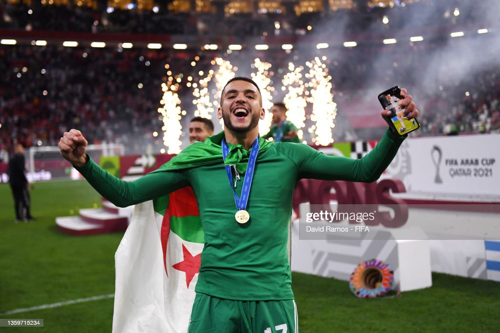

Bienvenue sur la page de Merouane Zerrouki

Valeur actuelle: 350 000€
Biographie
Merouane Zerrouki né le 25 janvier 2001 à Kouba En Algérie, est un footballeur international algérien. Il joue au poste d'attaquant au Paradou AC.
débuts
Il fait ses débuts avec Paradou AC le 24 septembre 2019, en entrant en jeu lors d'une victoire 1-0 contre l'ASO Chlef. Le 27 juillet 2021, il se met en évidence en étant l'auteur d'un triplé en championnat, lors de la réception du MC Oran, permettant à son équipe de l'emporter de justesse (5-4)
En nationale
Il reçoit sa première sélection en équipe d'Algérie le 1er décembre 2021, contre le Soudan. Ce match gagné sur le large score de 4-0 rentre dans le cadre de la Coupe arabe des nations. Zerrouki joue deux matchs lors de ce tournoi .